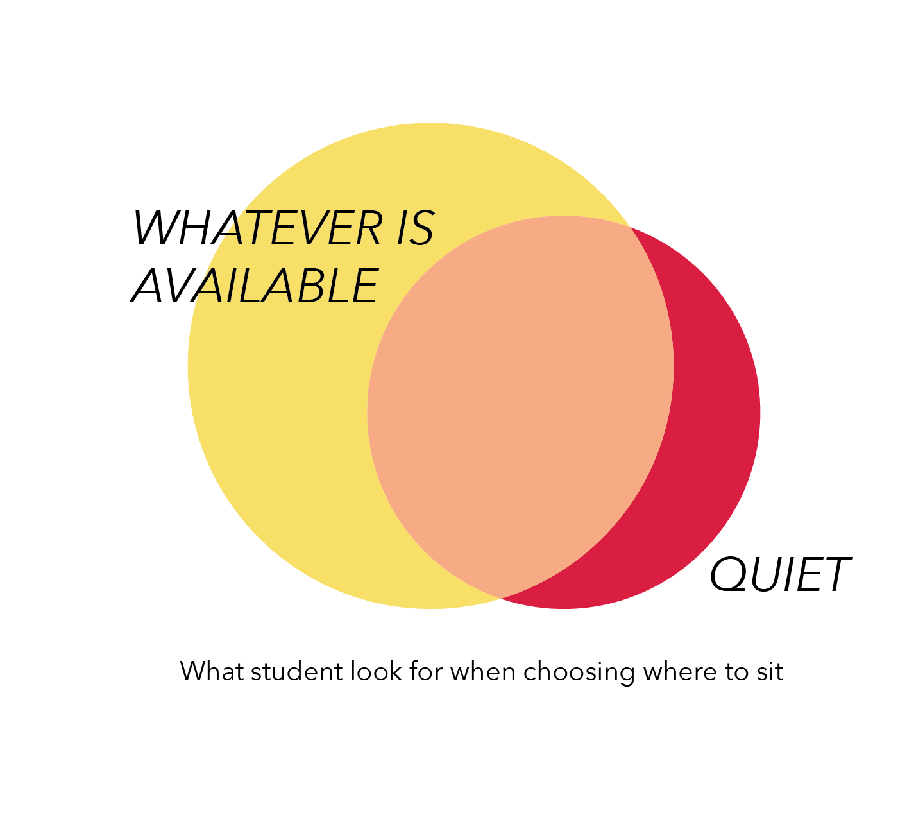
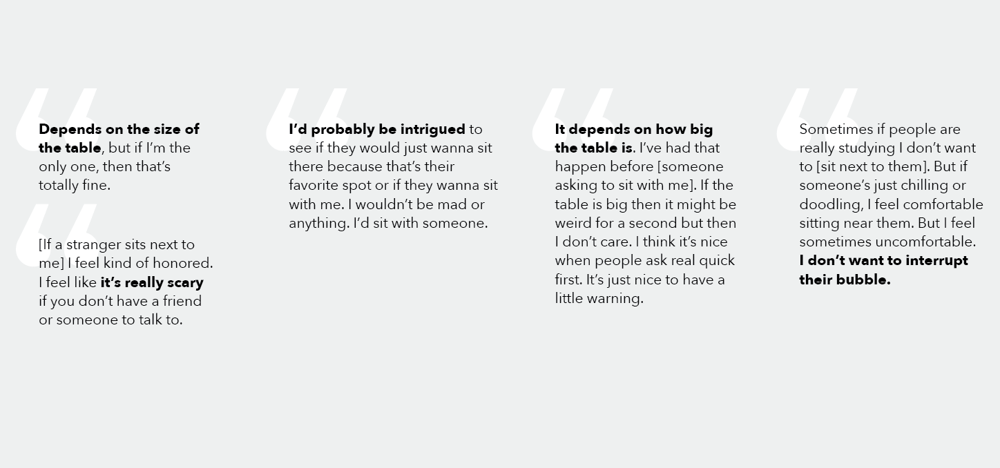
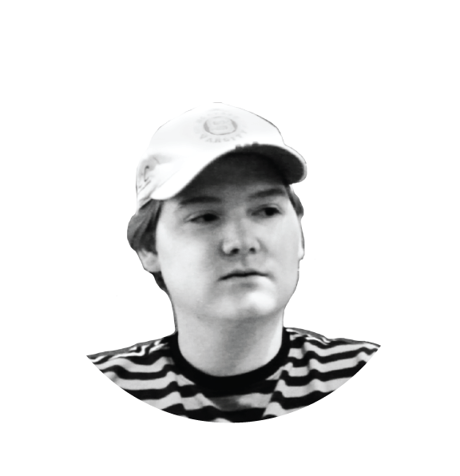
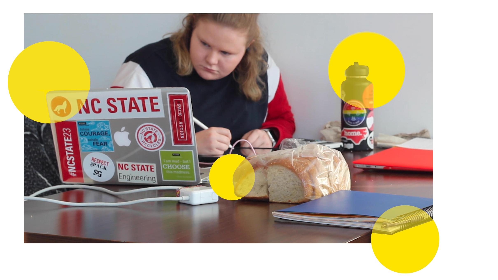
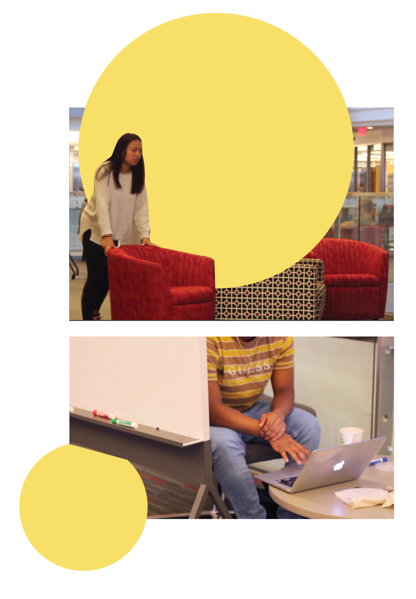
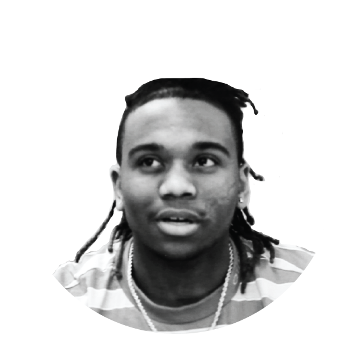

In Talley, there is a place for everyone and every purpose.
“A couple things that we wanted to do was make sure that there was flexible space, multi-use space so that it didn’t sit vacant, it had multiple uses. And then prioritizing functions that would keep activity here. So an older model would’ve had the best views locked away in offices. And at 5,6 o’clock lights start shutting off, which isn’t really inviting when students are just hitting their stride at 5,6 oclock. They’re getting out of class, looking for extracurriculars, coming from the gym, coming from the library, meeting a study group...and so wanting to signal that activity. So that’s why you see more light coming into the building, but also some public lounge space and meeting space right up against that class.. Because you can have a meeting at 10 oclock and still see the activity. So if you wanna see if there’s still activity, and if Talley is hustling and bustling, you can just look now and see that. Rather than the old model was dark on the outside but there may have been activity in the core.”

Students say they would not mind sitting next to a stranger.

Nonverbal signals say otherwise.
How do you prepare to study?
I don’t even really listen to music. I just put my airpods in so people know not to talk to me, because I’m working. Cause I get distracted when I listen to music.

"That’s an interesting one, is how people sit alone in today’s society moreso than previous. I think we’ve always sat alone, you know it’s the way you sit. But it’s more the queues that we have now that tell people that I don’t want to be bothered. So the earbuds in, the laptop, the way you’re looking, the way you spread out so that nobody else can join you. I think people intentionally shut people out, so it’s weird that people would want to come to Talley and feel connected, but then they disconnect themselves through that; by spreading out, by putting earbuds in, by saying 'don’t bother me, I’m just here to watch you. Don’t come talk and interact.' So that’s the hardest part, is how do you encourage that community."
HOW DO YOU DEFINE YOUR SPACE?
People tend to mark their territory.
How do you define your space?
Like, mark my territory? I just lay my stuff everywhere and hope no one takes it. I like to come with a group because it makes you feel like you're not taking up too much space. If I’m too isolated I get distracted.
In Dibs! Customer Territorial Behaviors, Merlyn Griffiths and Mary Gilly (2012) examined the behavioral phenomenon of consumers by studying customers at a popular coffee shop. They used observation, interviews, and surveys to discover more about the conflicts that have risen with the advent of mobile technology. Griffiths and Gilly proposed that customers treat public space in cafes more like home, and thus are more territorial as a result.

Studies show that
privacy and personalization are important.
What distracts you?
Loud people. When groups study out in the open. That’s pretty hard because they’re collaborating and talking and that can get pretty loud. There’s always conferences going around. Which, I appreciate the conferences, cause I go to the conferences at times, but it brings a lot of foot traffic at times, and when I’m studying that gets really distracting as well.
In More Than Defense in Daily Experience of Privacy: The Functions of Privacy in Digital and Physical Environments, Debora Benedetta Lombardi and Maria Rita Cicen (2016) dove into the importance of privacy on human well-being, as well as how environment shapes the perception of privacy. They begin their study by providing a definition of privacy generally agreed upon by social scientists Privacy is a “voluntary and temporary separation from public domain.”
There are two main traditions for the psychological study of privacy. One focuses on how a person seeks out privacy. The other focuses on why people seek out privacy. A generally accepted explanation is that it is to avoid environmental threats. The authors then propose that there must be the perception of threats in order to have a perception of privacy.
Privacy serves two main purposes for human functioning: system maintenance and system development. System maintenance is the idea of homeostasis, in which people naturally want to maintain their state of being. System development includes the psychological factors such as self-consciousness, and implies more long-term results.
The results showed that people felt more control over their environment when they perceived privacy. It also helped them to avoid overstimulation and focus on cognitive or creative tasks.
In “My space”, Gregory Lawrence, Yitzhak Fried, and Linda Slowik (2013) explored the relationship between privacy, personalization of space, and emotional exhaustion. The study mainly looked at workers at a white collar office. This article considered both architectural and experienced privacy.
They began by discussing the concept of burnout and emotional fatigue. Offices are often organized in a way so that there is not architectural privacy. Compared with the ultimately private four-opaque-walls-office, a traditional open space office opens the door for many auditory and visual distractions.
The Job Demands-Control model established that the more control a person is given at work, the less likely they are to become burnout. Other studies have shown this to be true as well. The authors also viewed workplace privacy through the lense of the Conservation of Resources theory, which states that when given insufficient materials for a job, emotional exhaustion was reported to be high.
This leads to a heavier cognitive load as people divide their attention between work and distractions or interruptions. The result of perceived constant surveillance also takes a mental and emotional toll.
The authors of this article further propose that personalization could lessen the effects of perceived low levels of privacy. Although this could simply be a correlation, psychological studies have shown that personalization results in feelings of ownership. Humans desire to mark things with something that signifies their identities. The authors describe personalization as a territorial behavior. A study of 87 employees were measured using the Maslach Burnout Inventory scale.About half of the people had what were considered architecturally private offices (four opaque walls) and the other half were considered not private. The level of personalization was measured based on the number of personal items. Indeed, the higher the personalization, the less negatively people felt about low privacy levels.
Previous research has shown that workplace personalization improves feelings of emotional exhaustion due to a perceived sense of control.
People change their environments to fit their needs.
"I think that we get a lot of input on services and that a lot of observation is where things go. So watching people move furniture around, that tells us a lot of things of how we should place things, what should we replace, even just what fills up first. You know it’s typically tables and chairs versus soft seating. So it tells us a lot about that activity."
According to Sherry, a member of the facilities enhancement team at Talley, students move furniture around. This was observed in lonely chairs pulled away from clusters of other chairs, as well as groups of chairs pushed together for friends to collaborate.
We also observed a phenomenon of students using the whiteboard panels on wheels as barricades if they were sitting alone.

Public collaborative installations can increase feelings of social connectivity.
What would you like more of?
I’d definitely like to see more individualized spaces. As far as more like the free expression tunnel. More design spaces, like if there was a wall in Talley that you could paint on.

In Design for Social Interaction in Public Spaces, Jun Hu, Joep Frens, Mathias Funk, Feng Wang, and Yu Zhang (2014) studied various interactive public installations, as well as ways to measure social connectivity. In two of the projects, a shared history and culture were used to incite feelings of connection. Many of the projects also used traditional physical arts, such as drawing or dancing, as they are cross-cultural.
Perhaps there is an opportunity to provide both a sense of security and encourage social interaction.
The third place offers an alternative to home and work. Merlyn Griffiths and Mary Gilly (2012) argue though, that if the original intent of the third space was to encourage socializing, then perhaps we are in need of a “fourth space” as a response to the postmodern workplace.
Is it possible to provide a solution that can act as both an aid in personal space by increasing personalization, while also increasing public interaction through a cohesive territory?